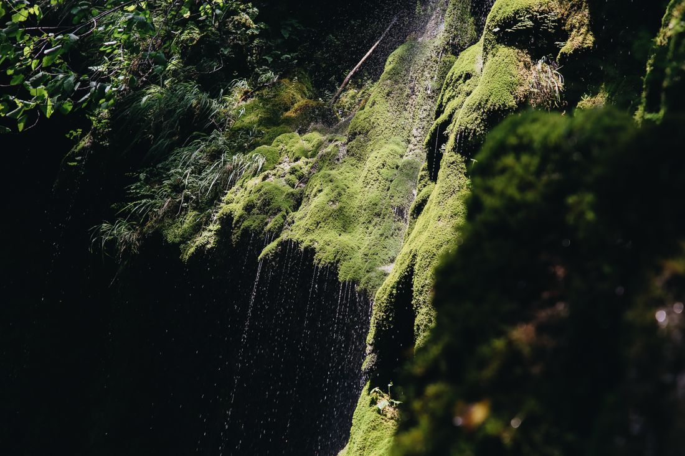

Yellow Leaf Bay
Explore the white-sand beaches around the bay or look for snorkeling and chartered fishing options.
Explore the island
Find beaches, rainforest, volcano visits, and activities around Taniti City and Yellow Leaf Bay.

Island interior
Hike through the tropical rainforest, try zip-lining, or plan a visit to Taniti’s small active volcano.
Ask local tour providers about departure points, tour length, access conditions, and what to bring. Provider schedules and reservations are outside this prototype.
Explore the white-sand beaches around the bay or look for snorkeling and chartered fishing options.
See the city’s native architecture, visit the local history museum, or explore the island on a boat or bus tour.
This area on the north side of Yellow Leaf Bay has many entertainment options. Look for galleries, pubs, and other evening activities.
Taniti has restaurants serving local fish and rice, American-style meals, and Pan-Asian cuisine. The island also has supermarkets, smaller grocery stores, and a 24-hour convenience store.
Check holiday closures